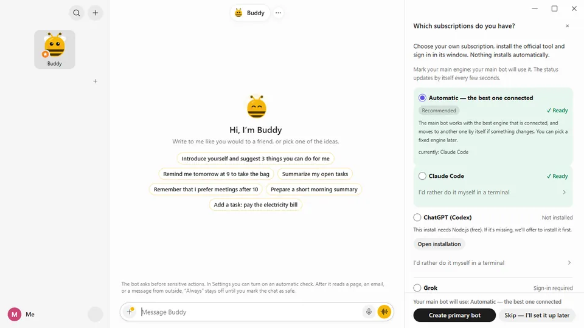

Easy
You don't need to be a developer
No config files, no server, no code. Kaveret walks you through the setup on screen, and after that you just talk to it.
- One click installs the engine. On Windows, Kaveret runs the official installer for you and shows its progress.
- Buddy builds your team. Ask for a bot that watches prices or sums up your email, and Buddy creates it, picks the engine and explains what it will do.
- Apps when you need them. When a task needs your email or calendar, the bot shows a Connect card right in the chat.
- Something not working? Settings › Check that everything works finds the problem and takes you to the screen that fixes it.
